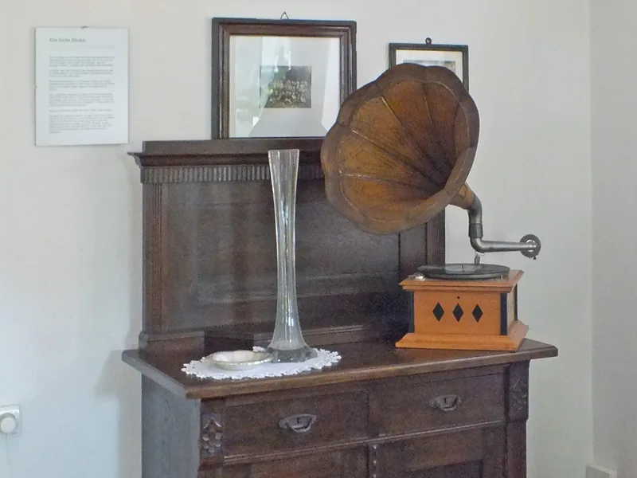
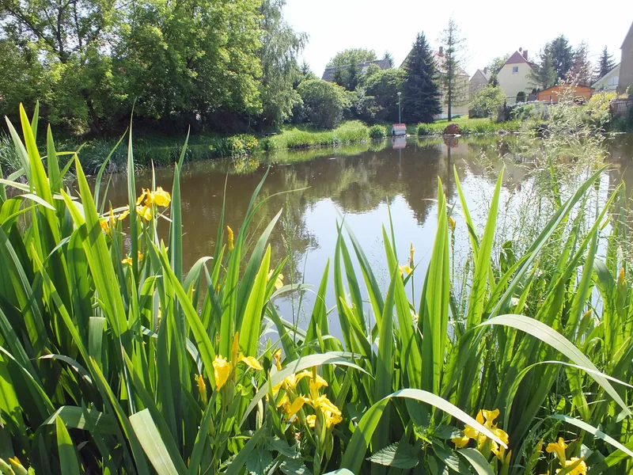
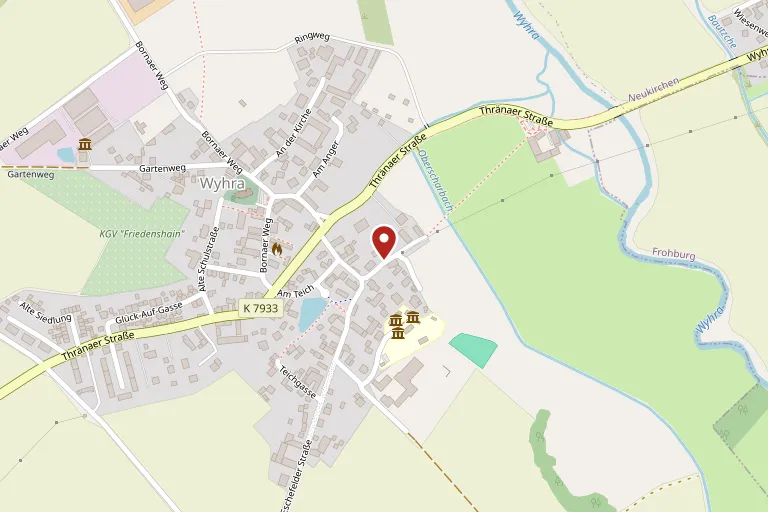

Geschichtenhof Wyhra
In einem denkmalgeschützten Vierseithof in Borna OT Wyhra: Die Hofgeschichten erzählen vom Leben auf einem sächsischen Bauernhof um 1900 — an einem Tag, an dem der jüngste Sohn getauft werden soll.
Ein Tag im Jahr 1900
Die Dauerausstellung „Hofgeschichten“ zeigt den denkmalgeschützten Vierseithof mit originalen Ausstattungsstücken in allen Räumen und im Freigelände. Sie besuchen den Hof an einem besonderen Tag: Alle sind in Vorbereitung auf die Tauffeier des jüngsten Sohnes.
Die Figuren sind keine historischen Persönlichkeiten, sondern Charaktere, wie sie hier gelebt haben könnten. An Hörstationen erzählen ein Bauer, seine Mutter, die Magd, die Kinder Anna und Georg und die Hofmaus von ihren Aufgaben, Plänen und Konflikten in einer Zeit enormer sozialer Umbrüche.
Blau-grüne Markierungen weisen auf Raumgeschichten und einzelne Objekte hin. Dort dürfen die Dinge nicht nur angefasst werden — anders lässt sich nicht herausfinden, wozu sie auf dem Hof gedient haben.

Sie wählen den Weg
Wyhra im Jahr 1900 war noch Teil einer Welt ohne Elektrizität; entsprechend sind die meisten Hofgeschichten manuell zu entdecken. Wer mag, lädt zusätzlich die MuseumsApp auf das eigene Gerät.
21 Räume werden an je einer eigenen Station erklärt, in zwölf davon stehen Hörstationen. Eine interaktive Karte führt über das Gelände und durch die Ausstellungsräume, jede Station enthält außerdem eine Knobelei. An eine bestimmte Route sind Sie nicht gebunden.
Die Familientour gibt es auf Deutsch und Englisch, in Audiodeskription für sehbehinderte Menschen und in deutscher Gebärdensprache — jeweils in einer Fassung für Erwachsene und einer für Kinder.

Veranstaltungen 2026
| 2. August | Tierisch stark — Erzähltheater für Kinder, MärchenSommer Leipziger Land, 16 bis 17 Uhr |
|---|---|
| 13. August | Pädagogischer Tag — Fortbildung für Schulen und Kitas, 10 bis 16 Uhr |
| 22. August | Fledermaus-Nacht zur Internationalen Batnight, 17 bis 21 Uhr |
| 29. August | Auszeit! Neues entdecken und Sinne wecken — Seminar, 10 bis 16.30 Uhr |
| 8. und 9. September | KräuterKochKurs mit Grit Nitzsche, jeweils 17 bis 20 Uhr |
| 12. September | Familienentdeckertour Wyhra — 775 Jahre Borna, 10 bis 16.30 Uhr |
| 16. September | Wyhra: Eine Ortsgeschichte in Geschichten — Vortrag, 18 bis 20 Uhr |
| 4. Oktober | Erntedankfest mit Familienprogramm, 10 bis 18 Uhr |
| 25. Oktober | Schmiede- und Handwerkstag zum Saisonabschluss, 12 bis 18 Uhr |
| 14. November | Obstbaumschnitt — Übungskurs der Volkshochschule, 12 bis 16 Uhr |
| 6. Dezember | Hofweihnacht, 14 bis 18 Uhr |
Stand: August 2026. Bitte vor dem Besuch beim Haus bestätigen lassen.
Drei Termine genauer
- Fledermaus-Nacht am 22. August: für Fans ab 5 Jahren, um 19 Uhr ein Bildvortrag, ab 20 Uhr mit dem Bat-Detektor ins Gelände. In Kooperation mit der Ökostation Borna-Birkenhain, Anmeldung nur dort, höchstens 30 Personen. Erwachsene 5,00 € inklusive Imbiss und Museumseintritt, Kinder bis 12 Jahre frei.
- Familienentdeckertour am 12. September: geführte Landpartie mit Kremserfahrt durch Wyhra, Station an der Neuholländermühle und am Treckermuseum. Information und Anmeldung bei der Volkshochschule Landkreis Leipzig.
- Erntedankfest am 4. Oktober: um 10 Uhr Gottesdienst mit der Kirchgemeinde Neukirchen-Wyhra, um 14 und 16 Uhr Vorträge zur Kulturgeschichte der Kartoffel, um 15 Uhr Konzert, dazu Kartoffelkuchen aus dem hofeigenen Backofen.
Scheune, Schäferwagen, Hofcafé
Die Entdeckerscheune, eine alte Fachwerkscheune, ist heute ein Raum für rund 30 Personen: Puppenspiel, Vorträge, Kreativangebote. Die Ökostation Borna-Birkenhain führt hier ihre naturpädagogischen Angebote durch; für Workshops und Seminare lässt sich der Raum auf Anfrage mieten.
Auf der Streuobstwiese stehen drei in ökologischer Bauweise errichtete Schäferwagen — Vorbild war ein alter Schäferkarren aus dem Bestand des Museums. Jeder Wagen bietet Platz für zwei Erwachsene und ein Kind, Bettwäsche und Handtücher sind im Preis enthalten; Waschräume und eine Gemeinschaftsküche liegen im Wohnhaus. Betrieben werden sie vom Verein zur Förderung des Museumshof e. V.
Sonntags von 13 bis 17 Uhr und zu ausgewählten Sonderveranstaltungen bewirtet der Förderverein im Hofcafé mit Kaffee und selbstgebackenem Kuchen. Der Zutritt ist mit der Eintrittskarte möglich.

Das Dorf Wyhra
Wyhra wurde 1150 erstmals erwähnt, der Name des Flusses schon 1105. Im Jahr 1286 verschenkte Friedrich von Schönburg den Ort an das Kloster Geringswalde. Die 1494 erbaute St.-Stephan-Kirche besitzt seit 1894 eine Orgel aus der Bornaer Werkstatt Kreutzbach.
Im 19. Jahrhundert prägte der Braunkohlebergbau die Gegend: 1897 wurde in Wyhra mit der „Grube Wyhra“ der erste Tagebau des Bornaer Reviers erschlossen. Seit dem 1. Januar 2004 gehört der Ort zur Großen Kreisstadt Borna.
Der Hof selbst wurde in den letzten Tagen der DDR als Bauernmuseum eingerichtet und 1991 am Benndorfer Weg eröffnet. Über viele Jahre hieß er Volkskundemuseum Wyhra, bevor er 2021 mit einem modernisierten Konzept als Geschichtenhof Wyhra wieder eröffnet wurde.

Rund um den Hof
Ein Stück aus der Ausstellung und drei Blicke ins Dorf, dessen Geschichte der Hof erzählt.
-

Grammophon in der Ausstellung, aufgenommen 2014 -

Der Dorfteich in Wyhra -

Die St.-Stephan-Kirche, erbaut 1494 -

Die Wassermühle mit ihrer Freiluftausstellung
Öffnungszeiten
| April bis Oktober | Samstag und Sonntag, 12 bis 18 Uhr |
|---|---|
| Sommer- und Herbstferien in Sachsen | zusätzlich Mittwoch bis Freitag, 10 bis 17 Uhr |
Stand: August 2026. Bitte vor dem Besuch beim Haus bestätigen lassen.
Gut zu wissen
- Letzter Einlass eine Stunde vor Schließung.
- Zu Veranstaltungen und auf Anfrage sind erweiterte Öffnungszeiten möglich.
- Am Festwochenende zum Stadtjubiläum 775 Jahre Borna, 29. und 30. August 2026, ist der Eintritt frei.
Eintritt
| Karte | Preis |
|---|---|
| Erwachsene | 5,00 € |
| Ermäßigt | 2,50 € |
| Kinder bis 12 Jahre | frei |
| Begleitperson eines schwerbehinderten Gastes mit Nachweis | frei |
| Jahreskarte Erwachsene | 15,00 € |
| Jahreskarte ermäßigt | 8,00 € |
- Ermäßigung erhalten Jugendliche von 13 bis 17 Jahren, Studierende, Auszubildende, schwerbehinderte Menschen, Freiwilligendienstleistende sowie Empfängerinnen und Empfänger von Leistungen nach SGB II und SGB XII.
- Mit der Leipzig Regio Card gibt es 10 Prozent Ermäßigung.
- Preise für Gruppen und für die Erlebnisprogramme auf Anfrage.
- Eine Zahlung mit EC-Karte ist nicht möglich.
Preisstand: August 2026.
Anfahrt
Anschrift
Benndorfer Weg 3
04552 Borna OT Wyhra
Lage
Der Hof ist das zweite Gut am Ortseingang von Wyhra. Zu Fuß ist er über den Pilgerweg von Frohburg aus erreichbar.
Bus
Linie 255 Borna–Thräna bis zur Haltestelle „Wyhra-Teich“, von dort rund 350 Meter zu Fuß.
Bahn
S-Bahn-Linie S 6 Leipzig–Geithain bis zum Haltepunkt „Neukirchen-Wyhra“, von dort rund zwei Kilometer zu Fuß.
Auto
Aus Richtung Leipzig oder Chemnitz über die A 72, Anschlussstelle 25, Richtung Frohburg; aus Richtung Altenburg über die B 93 durch Thräna Richtung Neukirchen.

Kontakt
Fragen zu Führungen, zu Angeboten für Schulklassen und Gruppen, zur Raumnutzung oder zur Barrierefreiheit beantwortet der Geschichtenhof selbst.
- Träger
- Stadt Borna
- Telefon
- +49 3433 851071
- kontakt@geschichtenhof.de
- Im Netz
- www.geschichtenhof.de
Barrierefreiheit vor Ort
Empfangs- und Kassengebäude sowie eine Toilette und eine Dusche sind barrierefrei gestaltet. Von 28 Räumen im Museum sind 13 mit dem Rollstuhl erreichbar, meist über eine kleine Schwelle; die Inhalte der übrigen 15 Räume vermittelt die MuseumsApp.
Der historische Natursteinbelag im Hof ist nicht ganz eben, mit dem Rollstuhl aber gut passierbar. Personalbetreute Aktionen und Spezialführungen mit Tastmaterialien sind auf Anfrage möglich. Die Schäferwagen sind nicht rollstuhlgerecht und nur über die Wiese erreichbar.